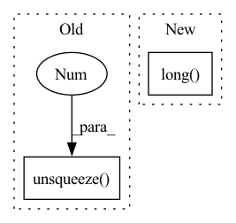

Pattern ID :16681
Before Change
valid_labels = torch.gather(reducing_list.to(device), 0, valid_labels)
valid_labels = valid_labels.unsqueeze(0)
valid_scores = valid_scores.unsqueeze(0 ) .transpose(-2, -1)
return valid_scores, valid_labels
After Change
reducing_list[ign_label:]
], 0)
valid_labels = torch.gather(reducing_list.to(device), 0,
valid_labels.long() )
return valid_scores, valid_labels
In pattern: SUPERPATTERN
Frequency: 5
Non-data size: 2
Instances Fragment ID: 55897028
Project Name: isl-org/open3d-ml
Commit Name: 67123f7e9d5dbbe6a73c42ef648093a7d25ace4a
Time: 2021-05-11
Author: sanskaragrawal107@gmail.com
File Name: ml3d/torch/modules/losses/semseg_loss.py
M Class Name: AnonimousClass
N Class Name: AnonimousClass
M Method Name: filter_valid_label(5)
N Method Name: filter_valid_label(5)
M Parent Class:
N Parent Class:
M File Name: ml3d/torch/modules/losses/semseg_loss.py
N File Name: ml3d/torch/modules/losses/semseg_loss.py
M Start Line: 19
M End Line: 35
N Start Line: 21
N End Line: 35
Before Change
// do loop in cpu
scn_seq = scn_seq.cpu()
for i,seq in enumerate(scn_seq):
batch_tokens.append( torch.tensor([CUSTOM_INFO[VOCAB.int2char(aa.item())]["atom_id_embedd"] \
for aa in seq]).long().to(device).unsqueeze(0 ) )
batch_tokens = torch.cat(batch_tokens, dim=0)
return batch_tokens
After Change
for i,seq in enumerate(scn_seq):
batch_tokens.append( torch.tensor([CUSTOM_INFO[VOCAB.int2char(aa)]["atom_id_embedd"] \
for aa in seq]) )
batch_tokens = torch.stack(batch_tokens, dim=0).long() .to(device)
return batch_tokens
def nth_deg_adjacency(adj_mat, n=1, sparse=False): Fragment ID: 55897029
Project Name: lucidrains/alphafold2
Commit Name: e361277a48c9514d016c333185d83e63a882c0c2
Time: 2021-05-16
Author: ericalcaide1@gmail.com
File Name: alphafold2_pytorch/utils.py
M Class Name: AnonimousClass
N Class Name: AnonimousClass
M Method Name: scn_atom_embedd(1)
N Method Name: scn_atom_embedd(1)
M Parent Class:
N Parent Class:
M File Name: alphafold2_pytorch/utils.py
N File Name: alphafold2_pytorch/utils.py
M Start Line: 438
M End Line: 445
N Start Line: 438
N End Line: 445
Before Change
.to(self.device)
) // [batch_size, num_float_features]
float_input_x_emb = [
torch.mul(self.float_embeddings[i](index), float_ffm_input.unsqueeze(2 ) )
for i in range(self.num_fields)
] // [num_fields: [batch_size, num_float_features, emb_dim]]
After Change
float_input_x_emb = []
if len(self.float_feature_names) > 0:
base, index = torch.split(float_ffm_input, [1, 1], dim=-1)
index = index.squeeze(-1).long()
index = index + index.new_tensor(self.float_offsets).unsqueeze(0)
float_input_x_emb = [
self.float_embeddings[i](index) * base for i in range(self.num_fields)
] // [num_fields: [batch_size, num_float_features, emb_dim]] Fragment ID: 55897031
Project Name: rucaibox/recbole
Commit Name: 3212dad4f1cbd81d7527038ca3764929b6c1d1c9
Time: 2022-07-16
Author: 1204216974@qq.com
File Name: recbole/model/context_aware_recommender/ffm.py
M Class Name: FieldAwareFactorizationMachine
N Class Name: FieldAwareFactorizationMachine
M Method Name: _emb_float_ffm_input(2)
N Method Name: _emb_float_ffm_input(2)
M Parent Class: nn.Module
N Parent Class: nn.Module
M File Name: recbole/model/context_aware_recommender/ffm.py
N File Name: recbole/model/context_aware_recommender/ffm.py
M Start Line: 301
M End Line: 309
N Start Line: 326
N End Line: 330
Before Change
lx, ly, lz = len(xs), len(ys), len(zs)
// construct points
xx, yy, zz = custom_meshgrid(xs, ys, zs)
world_xyzs = torch.cat([xx.reshape(-1, 1), yy.reshape(-1, 1), zz.reshape(-1, 1)], dim=-1).unsqueeze(0 ) .to(count.device) // [1, N, 3]
// cascading
for cas in range(self.cascade):After Change
// construct points
xx, yy, zz = custom_meshgrid(xs, ys, zs)
coords = torch.cat([xx.reshape(-1, 1), yy.reshape(-1, 1), zz.reshape(-1, 1)], dim=-1) // [N, 3], in [0, 128)
indices = raymarching.morton3D(coords).long() // [N]
world_xyzs = (2 * coords.float() / (self.grid_size - 1) - 1).unsqueeze(0) // [1, N, 3] in [-1, 1]
// cascading Fragment ID: 55897026
Project Name: ashawkey/torch-ngp
Commit Name: f02ec4824ef16a650c5a4acac510ec6c224a4337
Time: 2022-06-02
Author: ashawkey1999@gmail.com
File Name: nerf/renderer.py
M Class Name: NeRFRenderer
N Class Name: NeRFRenderer
M Method Name: mark_untrained_grid(4)
N Method Name: mark_untrained_grid(4)
M Parent Class: nn.Module
N Parent Class: nn.Module
M File Name: nerf/renderer.py
N File Name: nerf/renderer.py
M Start Line: 397
M End Line: 438
N Start Line: 397
N End Line: 439
Before Change
_, pppppp = torch.topk(cost, k=max_k, largest=False)
batch_ind = torch.arange(end=max_k, dtype=max_k.dtype).unsqueeze(0).repeat([num_gt, 1])
dynamic_ks___ = dynamic_ks.unsqueeze(1 ) .repeat([1, max_k])
mmm = (batch_ind < dynamic_ks___).to(torch.uint8)
After Change
// 对每个gt，取cost最小的k个候选正样本去学习。
max_k = dynamic_ks.max()
masks = torch.ones((max_k, max_k), dtype=torch.uint8, device=cost.device).tril(diagonal=0)
fill_value = masks[(dynamic_ks - 1).long() , :]
_, pos_idx = torch.topk(cost, k=max_k, largest=False)
M = cost.shape[1]
offset = torch.arange(start=0, end=M*num_gt, step=M, dtype=torch.int64, device=cost.device).unsqueeze(-1) Fragment ID: 55897032
Project Name: miemie2013/miemiedetection
Commit Name: 43dd136f727776fe4f3474de2de9675c0617c409
Time: 2023-05-08
Author: 53960695+miemie2013@users.noreply.github.com
File Name: test_code/test2_YOLOX_simota_matching.py
M Class Name: AnonimousClass
N Class Name: AnonimousClass
M Method Name: simota_matching2(3)
N Method Name: simota_matching2(3)
M Parent Class:
N Parent Class:
M File Name: test_code/test2_YOLOX_simota_matching.py
N File Name: test_code/test2_YOLOX_simota_matching.py
M Start Line: 52
M End Line: 89
N Start Line: 52
N End Line: 69